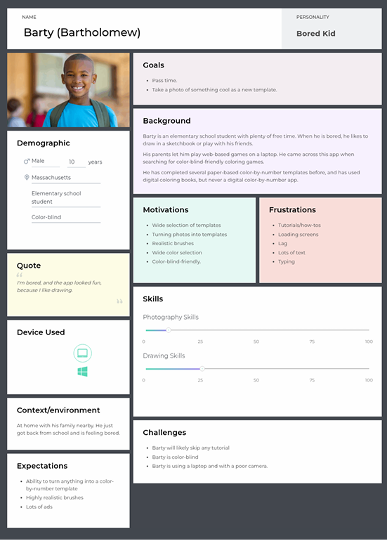
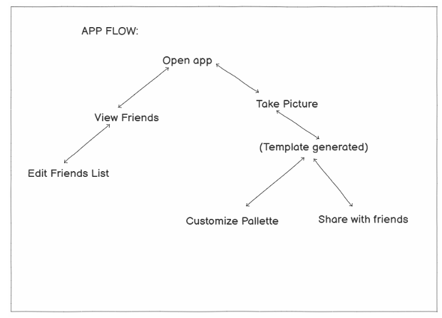
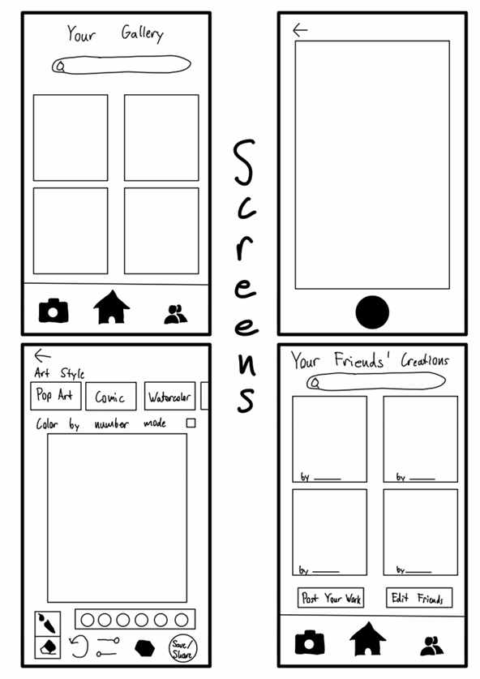
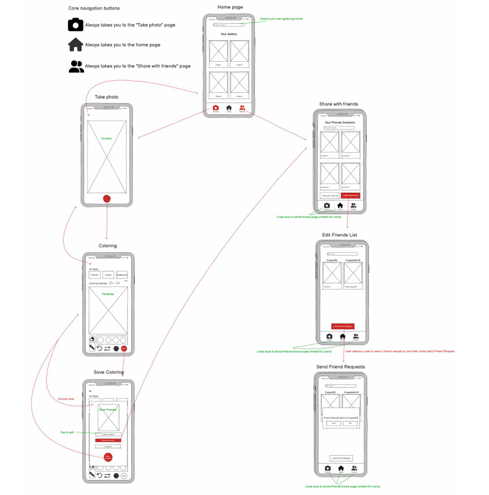
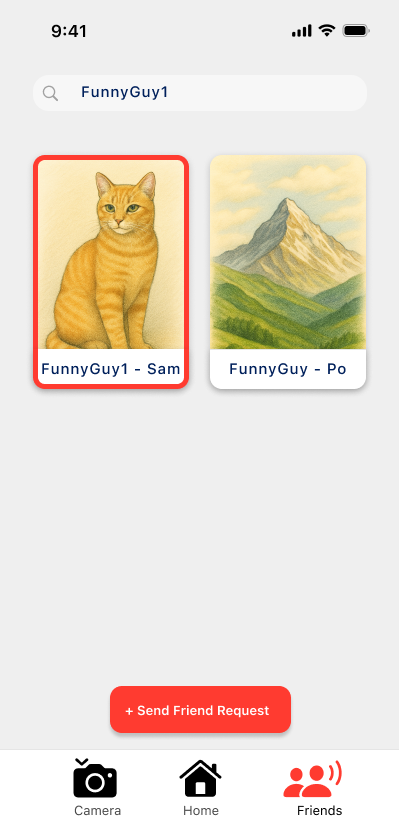
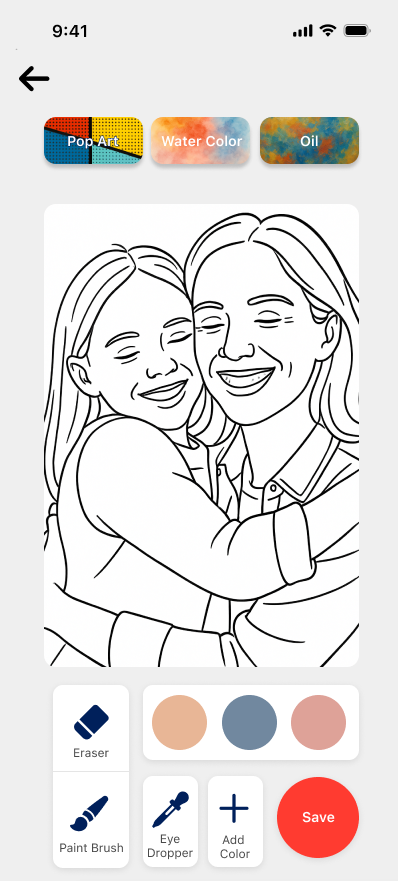

A mobile app that transforms user photos into customizable color-by-number templates — designed for accessible, stress-reducing creative time for adults.
Explore the prototype and project files
Created for CS 325 – Human-Computer Interaction.
Current digital coloring apps feel cluttered, lack personalization, and don't let users turn their own photos into coloring pages. People want calming, accessible creative outlets but are pushed away by paywalls, ads, and confusing interfaces.
How might we create a personalized, calming coloring experience that feels intuitive for first-time users and rewards creative expression without friction?
I conducted a competitive analysis of three leading apps (Lake, Pigment, UNICORN) and distributed a user survey to a diverse audience including family, friends, and sports teams.
Priority: wide color palette
Priority: no ads or paywalls
don't currently use coloring apps — an acquisition opportunity
No existing app is built specifically for adult photo-to-template coloring. This is the differentiator.
Survey findings shaped two distinct personas that drove every design decision.
→ Quick save/resume, intuitive onboarding, calming aesthetics
→ Color-by-number system, multi-device support, simplified UI

I created Balsamiq wireframes for the core flows and designed A/B variations for camera navigation — testing a traditional back button against gesture-based swipe navigation inspired by Snapchat.


I conducted think-aloud tests with 3 users on the lo-fi prototype, observing task completion and documenting confusion points in real time.
| Task | Range | Avg | Signal |
|---|---|---|---|
| Photo to Template | 11–13 sec | 12 sec | Consistent |
| Change Palette | 12–34 sec | 21.67 sec | High variance |
| Share with Friends | 8–48 sec | 23.67 sec | High variance |
Task 1 consistency validated strong iconography and clear camera entry point. Users said "the control flow was intuitive."
Users didn't understand the color picker icon. One user called it "the weird stop sign button." Fixed by switching to a universally recognized color picker icon.
User 3 spent 34 sec on Task 2 vs. 12 sec for others. Palette controls were spatially misaligned with actual color selection. Fixed by moving them together and adding visual indicators.
Blank save screen made users unsure if their template saved. Fixed with confirmation popups and system status indicators.

Every hi-fi decision maps directly to a usability finding. Nothing was added for aesthetics alone.


Black and white prototypes exposed color-dependent confusion that would have persisted all the way to development.
Video review surfaced specific wrong-area clicks that completion times alone would never have shown.
Survey results directly determined feature order: color palette first, then ad-free experience, then tutorials.
Research → lo-fi → testing → hi-fi. Every stage made the next one more grounded and harder to get wrong.
Infinite Coloring Book showed me that the gap between what users say they want and what actually confuses them only becomes visible when you watch them use something — not when you ask them about it.